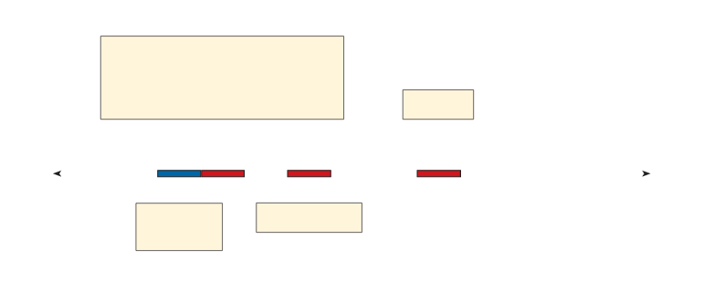

SAMBA E AS ORIGENS AFRICANAS
Para trabalhar o tópico “Samba e as origens africa-nas”, leia previamente a re-portagem Como surgiu o samba? (disponível em: https://super.abril.com.br/mundo-estranho/como-surgiu-o-samba/, acesso em: 5 maio 2024).
Sobre a linha do tempo, fale acerca dos ele-mentos dela, que já observa-ram na reta numérica: as setas, a distância entre os números e a organização em ordem crescente.
Explore-a, perguntando como podemos saber qual foi o primeiro rit-mo e leia em voz alta esse número.
Explique que repre-sentamos um período na re-ta para mostrar o surgimen-to desses ritmos.
Esse perío-do está marcado com linhas mais grossas.
Alguns desses números já são conhecidos por eles.
Incentive-os a dizê-los em voz alta.
Converse sobre outras situações em que usamos a palavra década, como: “músicas da década de 1990”.
O SAMBA É BRASILEIRO, PORÉM TEM INFLUÊNCIA DE RITMOS AFRICANOS.
NASCEU NA BAHIA, ANTES DO ANO DE 1900, MAS FOI NO RIO DE JANEIRO QUE ESSE RITMO EVOLUIU, INCORPOROU INSTRUMENTOS E GANHOU OUTROS MODOS DE SER CANTADO, DANDO ORIGEM A OUTROS ESTILOS DE SAMBA.
LINHA DO TEMPO
A LINHA DO TEMPO A SEGUIR INDICA O PERÍODO EM QUE CADA ESTILO DE SAMBA SURGIU.

FONTE: ELABORADO PELOS AUTORES COM BASE EM DADOS DISPONIBILIZADOS EM: https://super.abril.com.br/mundo-estranho/como-surgiu-o-samba. ACESSO EM: 4 MAIO 2024.
1)
QUAIS NÚMEROS REPRESENTADOS NESSA LINHA DO TEMPO VOCÊ CONHECE?
Resposta pessoal.
2)
QUAL É O MENOR NÚMERO REPRESENTADO NESSA LINHA DO TEMPO? E QUAL É O MAIOR?
O menor é 1900 e o maior 2030.
3)
NESSA LINHA DO TEMPO ESTÃO REPRESENTADOS PERÍODOS DE 10 ANOS.
UM PERÍODO DE 10 ANOS É CHAMADO DE DÉCADA.
A)
A BOSSA NOVA SURGIU NO FIM DA DÉCADA DE 1950. EM QUAL DÉCADA SURGIU O PAGODE?
Na década de 1980.
B)
ESCREVA NO CADERNO O ANO EM QUE VOCÊ NASCEU E TENTE LOCALIZAR NA LINHA DO TEMPO A DÉCADA DO SEU NASCIMENTO.
Resposta pessoal.
Nas atividades 1 e 2, os estudantes precisam identificar os números na linha do tempo e, posteriormente, classificá-los como maior ou menor.
Incentive-os a compartilhar com os colegas as estratégias pessoais que utilizaram para classificar os números daquela maneira.
Na atividade 3, trabalha-se com a unidade de medida de tempo década.
Mostre exemplos de décadas anteriores, como os anos 1950, 1960, 1970, e assim por diante.
Finalize a atividade retoman-do o conceito de décadas e sua importância na compreensão da história e da cultura.